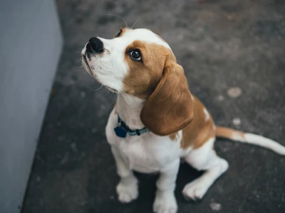
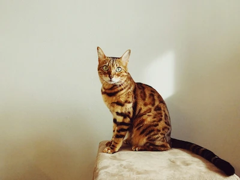
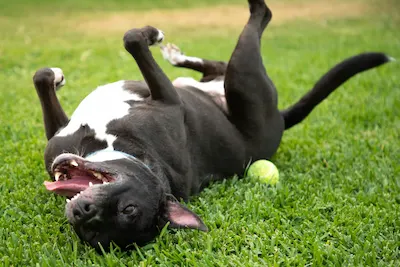
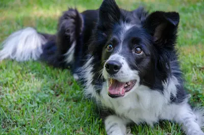
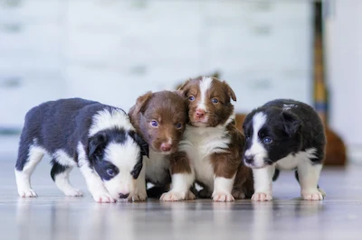
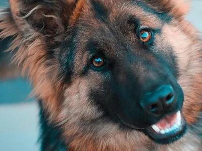
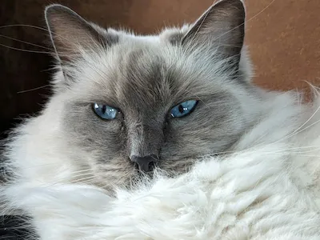
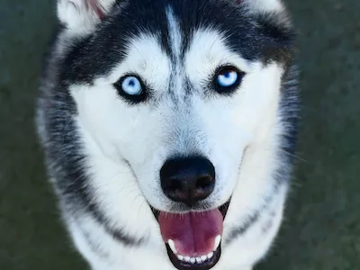
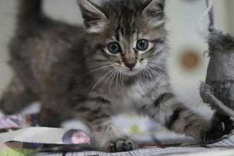

Meet our lively dogs and curious cats, each full of personality and charm! Explore their playful adventures and let their energy make you smile.

4 month year old beagle, boy

2 year old bengal cat, boy

2 year old English Springer Spaniel, boy

7 year old Border Collie, girl

2 month old Cavalier King Charles Spaniel quadruplets

4 year old german shepherd, girl
2 month old Golden Retriever, girl

5 years old Ragamuffin, girl

3 years old Siberian Husky, girl

11 month old Tabby Kitten, girl